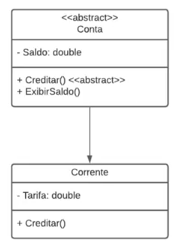

Requisitos do projeto
O professor indicou fazer o download do SDK do .NET no site da Microsofte também o VSCode. Irei fazer essa instalação, mesmo tendo o visual studio e instalando as "cargas de trabalho" como indicado pela nossa querida colega Giovanna Ramos.
- criar pasta do raiz projeto
- abrir o cmd nesse diretório
-
comando dotnet new sln --name ExemploPOO
Esse comando cria uma "solution" com o nome ExemploPOO. Essa solution é um agrupamento para o projeto.
- criou um novo diretório dentro da pasta do projeto com o nome ExemploPOO
- entrou nesse novo diretório e criou o projeto de fato com o comando dotnet new console
-
depois voltou à pasta raiz do projeto e deu o comando dotnet sln add ExemploPOO/ExemploPOO.csproj
Esse comando adiciona na solution o arquivo csproj especificado.
- abriu a pasta do raiz do projeto no vscode
- no vscode ele instalou as extensões
- c#
- c# extensions
- vscode-icons
- dentro da pasta ExemploPOO ele criou uma outra chamada Models
Abstração - Prática
-
dentro da pasta Models ele criou uma classe c# de nome Pessoa.
A extensão c# extentions então cria o arquivo cs com o nome Pessoa e dentro dele uma série de códigos para uma classe também de nome Pessoa)
- na primeira linha do recém criado documento ele colocou o comando using System;
- criou dentro da classe Pessoa os atributos Nome e Idade, com os adjetivos public, string e os verbos (get;set;) como parâmetros.
-
criou dentro da classe Pessoa um método Apresentar() com os adjetivos public e void. O método faz Console.WriteLine($"Olá, meu nome é {Nome} e tenho {Idade} anos");
O símbolo de cifrão no início do comando indica uma interpolação entre uma string e os atributos da classe.
- ele apertou F1 e no buscador do vscode que se abriu ele pesquisou omnisharp select project, isso para dar os autocomplete do c#. Ele escolheu o sln entre os dois que apareceram
- em ExemploPOO/Program.cs ele colocou dentro do método Main o texto Pessoa e deu um ctrl . para importar os métodos do ExemploPOO.Models, depois continuou escrevendo ao final Pessoa p1 = new Pessoa();
-
p1.Nome = "Bob";
p1.Idade = 20;
p1.Apresentar();
- para executar o programa nós devemos abrir o cmd no nível do csproj do nosso projeto e darmos o comando dotnet run
Encapsulamento - Prática
- criou a classe Retangulo.cs em ./ExemploPOO/Models
- dentro dela os atributos private double comprimento e largura
- criou um método capaz de alterar as propriedades private. Esse método será exposto publicamente
public void definirMedidas(double comprimento, double largura)
{
this.comprimento = comprimento;
this.largura = largura;
}
- criou o método obterArea
public double obterArea()
{
return comprimento * largura;
}
O método é double pois ele retorna um double.
- ele fez alguns tratamentos de if para não permitir que sejam passados números iguais ou menores que 0.
- o prof fez instancimanto de objetos com essa classe no método Main da classe Program.cs, definindo os comprimentos e obtendo as áreas, tanto para valores válidos quanto inválidos
- para rodar o código nós damos o comando dotnet run no diretório de Program.cs.
Herança - Prática
- em ./ExemploPOO/Models ele criou as classes Professor.cs e Aluno.cs que herdam as propriedades da classe Pessoa.cs
- criou na classe Pessoa o atributo public string Documento
- para herdar algo de alguma classe nós colocamos : ClassePai depois de public class ClasseFilha
- criou a propriedade public int Nota em Aluno e Salario em Professor
- Para rodar, escrevemos os códigos no método Main da classe Program e damos dotnet run no diretório dessa classe.
Polimorfismo - Prática
Late binding
Alteração do método Pessoa.apresentar() para que aceite o polimorfismo e criação nas classes filhas Aluno e Professor do método apresentar modificado.
Early binding
Criou a classe Calculadora em Models de acordo com a imagem e instanciou a classe em Program.cs, chamando o método somar dentro do WriteLine.
É possível percebermos que podemos passar dois ou três parâmetros quando usamos o método.
Classes abstratas
-
Ele criou a seguinte estrutura.

Observar que no diagrama o sinal de menos indica que a propriedade é protected, o sinal de mais indica que é public.
Para definir que uma classe ou método é abstrato nós utilizamos o adjetivo <<abstract>> depois do modificador de acesso.
Os métodos abstratos não têm a estrutura de chaves depois de sua nomeação, uma vez que sua lógica deve ser obrigatoriamente criada na sua chamada na classe filha.
A classe "Corrente" foi criada na pasta Models.
Classes seladas
Feitos testes com criação da classe Diretor em Models, que herda props de Professor. Depois marcamos a classe Professor como selada de acordo com as intruções da aula e podemos notar o erro que aparece na classe Diretor, uma vez que este herda daquele, que agora é selado. Fez alguns testes também com o método apresentar, colocando e tirando o adjetivo sealed.
Classe Object
Podemos criar uma classe vazia e em outro lugar fazer uma instaância dela. Podemos observar os métodos que nos são apresentados, indicando que mesmo uma classe vazia já tem métodos implícitos que são herdados da classe mão Object.
Interfaces
- ele criou a pasta ./ExemploPOO/Interfaces
- criou nesta pasta uma nova interface chamada ICalculadora.cs
- criou os métodos somar, subtrair, multiplicar e dividir com retorno int
{kind=link}